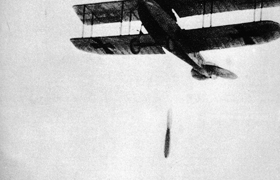

Lezione 18  La prima guerrra mondiale
La prima guerrra mondiale

Fin dall’inizio la Prima guerra mondiale si presentò diversa da tutte le altre. Fu una guerra di massa, che coinvolse enormi quantità di soldati: operai e contadini furono mandati a combattere anche in giovanissima età, appena diciottenni. La trasformazione industriale del secolo precedente aveva enormemente cambiato e sviluppato le tecnologie militari: gli eserciti europei ebbero a disposizione armi nuove e di una potenza straordinaria. L’uso della mitragliatrice, dei fucili a ripetizione, di esplosivi e di cannoni con un’enorme potenza costrinse a nuove strategie militari, portò gli eserciti a combattere una guerra di logoramento in trincea, aumentò i morti durante gli assalti: tra i soli combattenti il bilancio delle vittime fu di poco inferiore a dieci milioni di persone. Comparvero i primi carri armati, vennero impiegati aerei, soprattutto per fare ricognizioni, e sottomarini, che potevano affondare le navi da guerra e le navi mercantili: la guerra venne combattuta anche in mare. Una guerra che doveva durare poco si rivelò lunga e logorante. Uccise i soldati, ma stremò anche la popolazione civile. La fame e le difficoltà di rifornimento di prodotti alimentari e materie prime toccarono tutti i paesi coinvolti, ma in modo particolare gli Imperi centrali. La Gran Bretagna, che possedeva una flotta navale potente, oltre all’impero coloniale più vasto del mondo - e dunque una maggiore capacità di procurarsi le risorse - aveva imposto il blocco navale a Germania e Austria, ponendole in serie difficoltà e costringendole a razionamenti del cibo, che furono chiamati “fame organizzata”. Nelle industrie venne intensificata la produzione bellica. Furono impiegate le donne, poiché quasi tutti gli uomini si trovavano al fronte per via della leva obbligatoria.